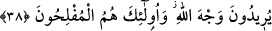

rızık veren hakkında şüpheye düşen kimse yaratıcısı hakkında da şüpheye düşmüş
demektir.
Nitekim hikâye edilir ki Ma‘rûf Kerhî (k.s.) bir imama uyarak namaz kıldı.
Namazdan sonra imam ona: “Nereden yiyorsun/karnını nereden doyuruyorsun, ey
Ma‘rûf?” diye sordu. Ma‘rûf: “Sabret, ey imam! Peşinde kıldığım namazı kazâ edeyim
de ondan sonra cevap veririm.” dedi. Çünkü rızkı verenin kim olduğu konusunda şüphe
eden kimse, yaratanın kim olduğunda da şüphe içindedir. Yakînen inanan bir mü’minin
sarsıntı ve tereddüd içindeki bir kimseye uyması câiz olmaz. Onun için Allah Teâlâ
“îmanlı bir kavim için” buyurmuştur. Çünkü mü’min olmayan âyetleri/ibretleri tanımaz,
dalâletlerden sonuç çıkaramaz. Dolayısıyla da şüphe, tereddüd ve karanlıklar içinde
kalır.
Hirem, Üveys (r.a.)’a “Nerede olmamı emredersin?” diye sordu. O da Şam tarafını
işâret etti. Bunun üzerine Hirem: “Orada nasıl geçineceğim?” diye sordu. Üveys: “İçine
şüphe karışmış ve öğüt fayda etmeyen bu kalblere yazıklar olsun!” Çünkü öğüt bir şahin
gibidir. Onu ancak diri olan avlar. Kendisine şüphe karışan kalb ise tenbihin fayda
etmediği ölü mesâbesindedir.
Yüce Allah’tan bizi gaflet uykusundan uyandırmasını ve cehâlet azâbıyla azâb
edilenlerden kılmamasını niyaz ederiz. Çünki Kerîm, Raûf ve Rahîm olan O’dur.
38. O halde sen, akrabaya, yoksula ve yolda kalmışa hakkını ver. Allâh’ın rızâsını
isteyenler için bu, en iyisidir. İşte onlar kurtuluşa erenlerdir.
“O halde sen,” ey kendisine rızık bol verilen kişi! “akrabaya”sıla-i rahim, sadaka ve
diğer iyilikler gibi “yoksula ve yolda kalmışa” onların hak ettiği sadaka, yardım ve
misafirperverlik gibi “hakkını ver.”
Ebû Hanîfe (r.h.) bu âyeti, ihtiyaç olduğunda mahremi olan ikinci dereceden yakınlar
(zevi’l-erhâm) için nafakanın vâcib olmasına delil getirir. Şâfiî ise onları amca oğluna
kıyas eder, nafakayı ancak doğum bağı sebebiyle çocuklar ve anne-baba için vâcib
görür.
Keşfü’l-esrâr’da belirtildiği üzere “__WORD__ misafirdir.
et-Te’vîlâtü’n-Necmiyye’de der ki: “Akrabalığın/yakınlığın neseb yakınlığı ve din
yakınlığı olmak üzere iki kısım olduğuna işâret etmektedir. Din yakınlığı daha önemli ve
gözetilmeye daha müstehaktır. Böyle olanlar Allah yolunda kardeşlerdir. Büyüklerin
eteklerine yapışan irâde ehlinden velâyet sulbünden gelen evlâdlardır. Onlar tamamen
Allâh’a yönelmiş, Allâh’ı taleb ile meşgul, maişet talebi endişesini bırakıp dünyâdan